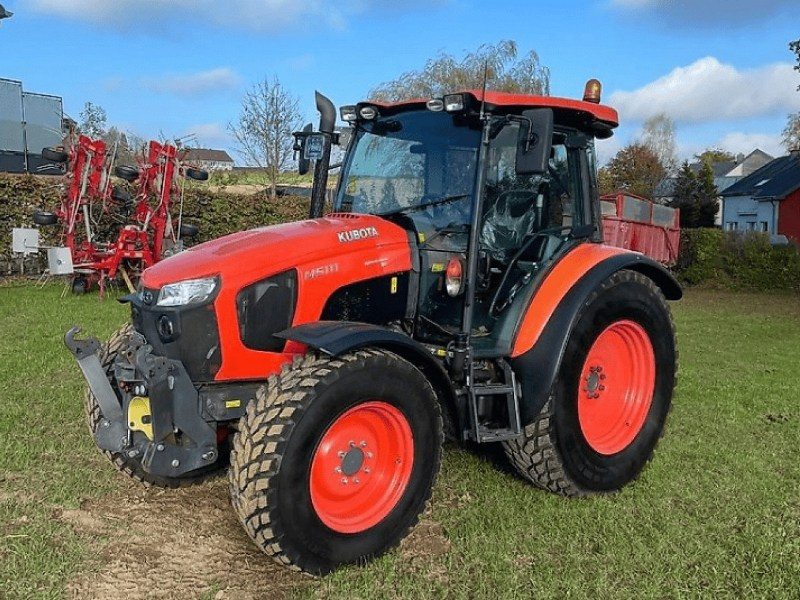

Kubota M5111

Kubota M5111 – це сучасний універсальний трактор, який є ідеальним вибором для фермерських господарств, що спеціалізуються на рослинництві, тваринництві або комунальних роботах. Завдяки технології Common Rail та системі обробки вихлопних газів, двигун поєднує високу продуктивність із низькою витратою пального та відповідністю суворим екологічним нормам.
Трактор вирізняється надзвичайною маневреністю завдяки передньому мосту з конічними шестернями та фірмовій системі Bi-Speed Turn, яка дозволяє розвертатися в обмеженому просторі з мінімальним радіусом. Модель комплектується трансмісією з 36 передачами вперед і 36 назад, включаючи електрогідравлічний реверс для швидкої зміни напрямку руху без зчеплення. Простора кабіна Ultra Grand Cab забезпечує панорамний огляд, ергономічне розташування органів керування та комфортні умови праці.
| Параметр | Значення |
|---|---|
| Клас тяги | 2.0 |
| Тип ходової частини | колісний |
| Колісна формула | 4х4 |
| Тип рами | жорстка конструкція |
| Основне призначення | овочівництво, садівництво, фермерські господарства, робота з навантажувачем та транспорт |
| Параметр | Значення |
|---|---|
| Модель | Kubota V3800-TIE4 |
| Тип двигуна | 4-циліндровий, дизельний, 16 клапанів, з турбонаддувом |
| Спосіб охолодження | рідинне |
| Розташування циліндрів | рядне, вертикальне |
| Робочий об’єм | 3,8 л (3769 см³) |
| Номінальна потужність | 78,3 кВт (106,5 к.с.) |
| Максимальний крутний момент | 345 Н·м (при 1500 об/хв) |
| Номінальні оберти | 2600 об/хв |
| Очищення вихлопних газів | SCR, DPF, EGR, DOC (Stage IV) |
| Питома витрата (оптимальна) | 215 г/кВт·год |
| Параметр | Значення |
|---|---|
| Муфта зчеплення | багатодискова, "мокрого" типу (в масляній ванні) |
| Тип КПП | синхронізована, з електрогідравлічним реверсом (Power Shuttle) |
| Кількість передач | 36 вперед / 36 назад (3 діапазони, 6 передач, 2 ступені Dual Speed) |
| Діапазон швидкості вперед | 0,34 – 40 км/год |
| Діапазон швидкості назад | 0,34 – 40 км/год |
| Тип зчеплення | багатодискове в масляній ванні з гідравлічним приводом |
| Вал відбору потужності (ВВП) | 540 / 540E об/хв |
| Діапазон | Передача | Швидкість (Lo / Hi), км/год | Характеристика тяги | Тягове зусилля (max), кН |
|---|---|---|---|---|
| C (Creeper) | 1 — 6 | 0,34 — 1,18 / 0,42 — 1,44 | Надповільний: овочівництво, посадка | 36,0 — 38,0 |
| L (Low) | 1 — 6 | 2,75 — 8,10 / 3,36 — 9,88 | Основний робочий: оранка, посів | 28,0 — 32,0 |
| H (High) | 1 — 6 | 11,2 — 32,8 / 13,7 — 40,0 | Транспортний: переїзди, причепи | 12,0 — 18,0 |
Система Dual Speed дозволяє миттєво змінювати швидкість на 18%, що дає змогу гнучко реагувати на зміну опору ґрунту.
| Параметр | Значення |
|---|---|
| Тип коліс | пневматичні шини |
| Шини передні (стандарт) | 320/85 R24 |
| Шини задні (стандарт) | 420/85 R34 |
| Радіус ведучого колеса (заднього) | 0,780 м (Rw) |
| Колія передніх коліс | 1560 – 1660 мм |
| Колія задніх коліс | 1540 – 2045 мм |
| Кліренс (дорожній просвіт) | 450 мм |
| Передній міст | з конічною передачею (Portal type) |
| Режим роботи | Витрата, л/год |
|---|---|
| Важкі польові роботи (оранка, глибока культивація) | 13,5 – 15,5 л/год |
| Середні польові роботи (посів, дисковка, обприскування) | 8,5 – 11,0 л/год |
| Робота з навантажувачем / фермерські роботи | 6,5 – 8,0 л/год |
| Транспортні роботи (до 40 км/год) | 7,5 – 9,5 л/год |
| Холостий хід (зупинки) | 1,0 – 1,2 л/год |
| Параметр | Значення |
|---|---|
| Експлуатаційна (робоча) вага | 3420 – 3700 кг |
| Максимально допустима вага | 6650 кг |
| Довжина / Ширина / Висота | 4045 / 2195 / 2645 мм |
| Колісна база | 2250 мм |
| Об’єм паливного баку | 105 л (+ 12 л AdBlue) |
| Параметр | Значення |
|---|---|
| Гідравлічна система | відкритий центр, продуктивність 64 л/хв |
| Вантажопідйомність навіски | 4100 кг |
| Максимальний тиск гідросистеми | 19,6 МПа |
| Радіус розвороту | 4,2 м (завдяки портальному передньому мосту) |
| Особливості | Система Bi-Speed Turn: при куті повороту коліс понад 35° передні колеса починають обертатися швидше, що різко зменшує радіус розвороту та мінімізує пошкодження ґрунту. |